Python Scripts & Notebooks
Automating repetitive GIS tasks with Python, FME, and SQL.
What I did
I automated 50+ ETL workflows using stored procedures, FME, and Python. I also built task interfaces with Qt, Tkinter, and Flask.
Result: One two-hour manual process became a two-minute automated job. Across the analyst and intern roles, I also managed 8+ ArcGIS Servers, ArcGIS Portal, and 90+ hosted feature services.
Tools
- Python
- SQL
- FME
- Flask
- Qt
- Tkinter
The time saving applies to one workflow; full source projects and datasets are not included.
Project gallery
Historical portfolio screenshots. 14 images. Select an image to view it full size.
{kind=link}
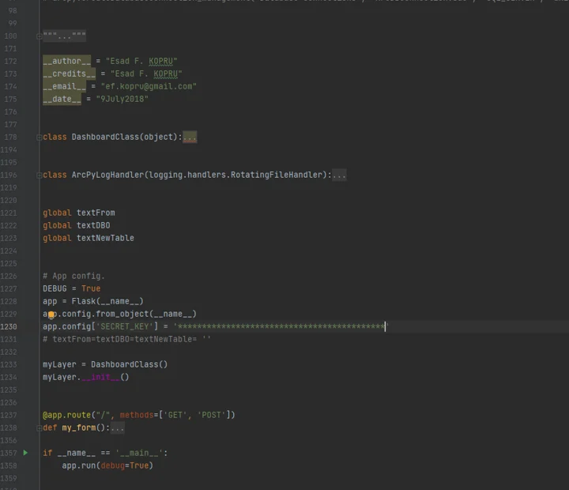
{kind=link}
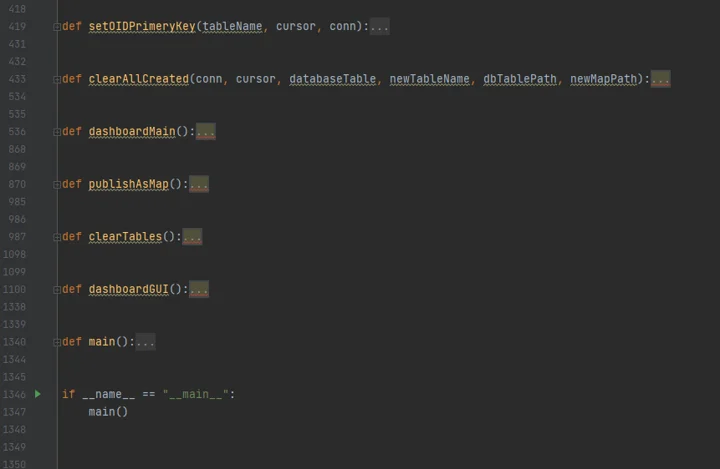
{kind=link}
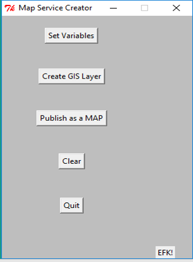
{kind=link}
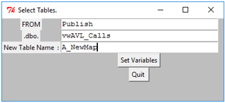
{kind=link}
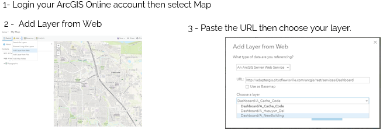
{kind=link}
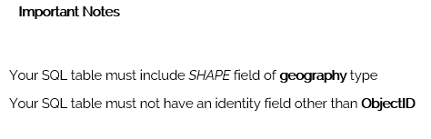
{kind=link}
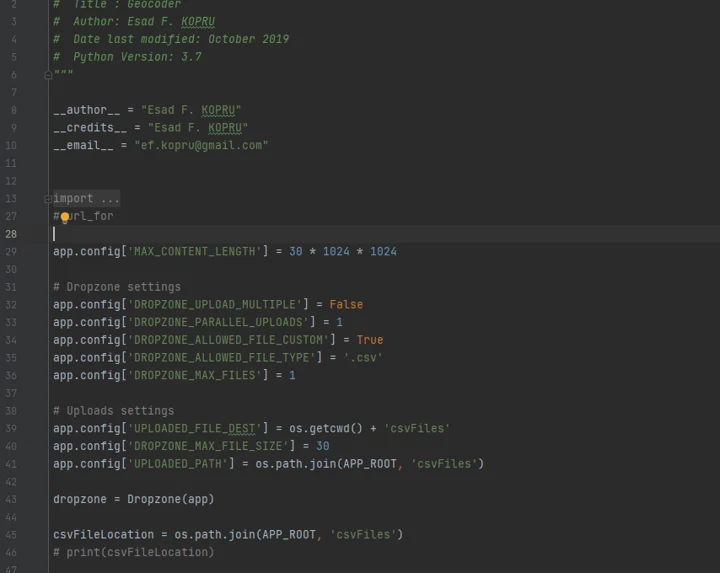
{kind=link}
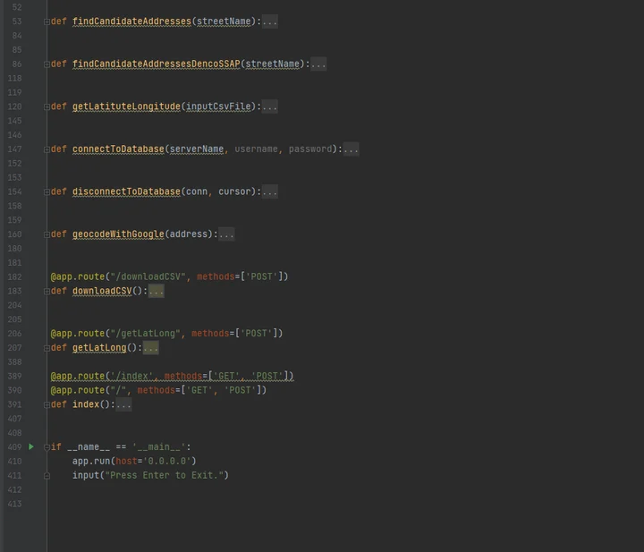
{kind=link}
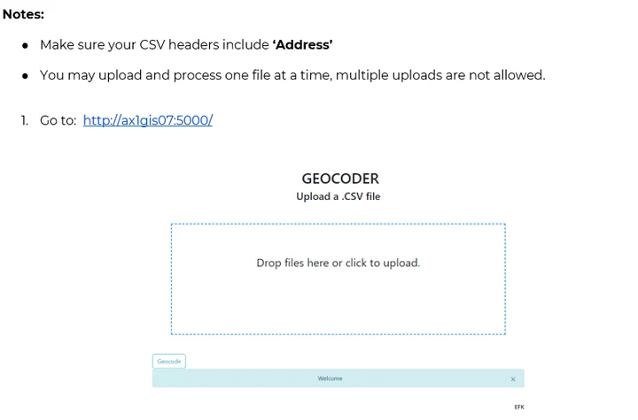
{kind=link}
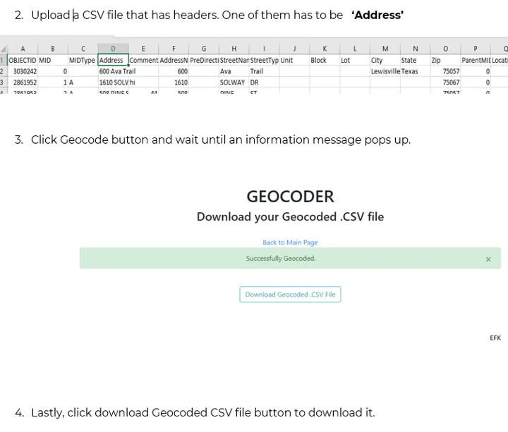
{kind=link}
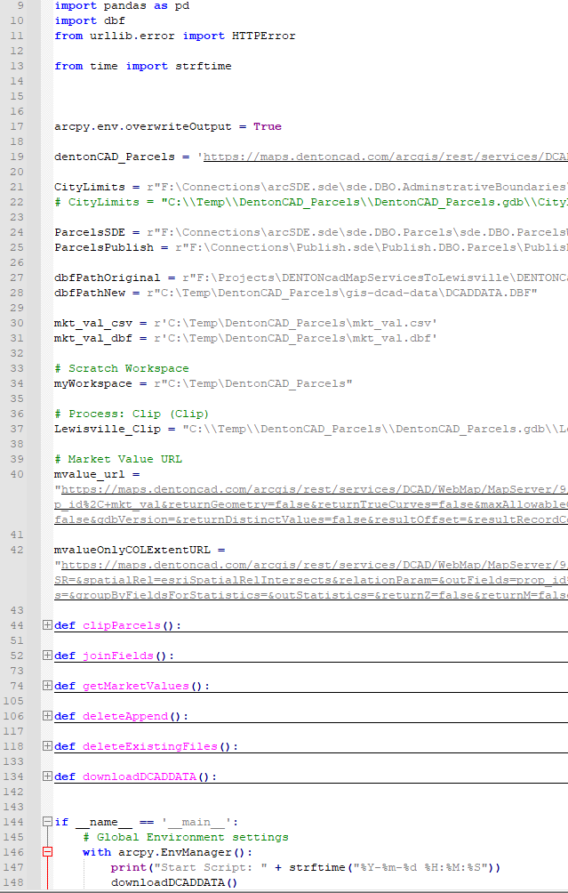
{kind=link}
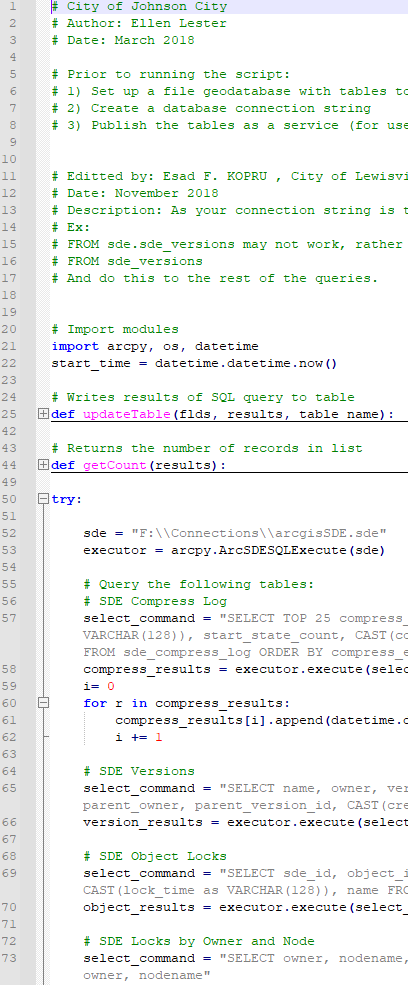
{kind=link}
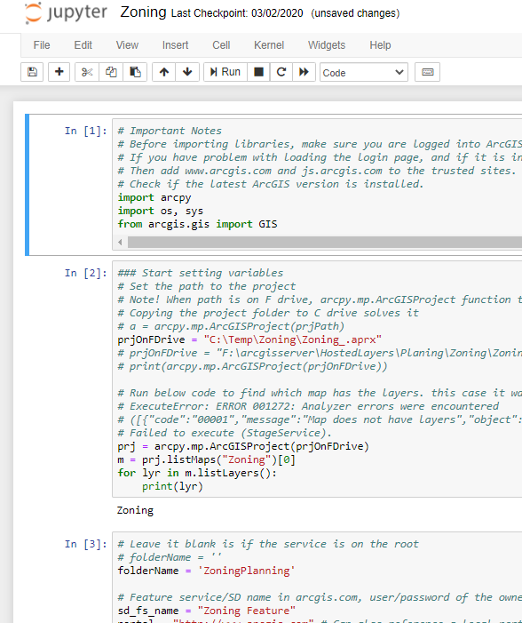
{kind=link}
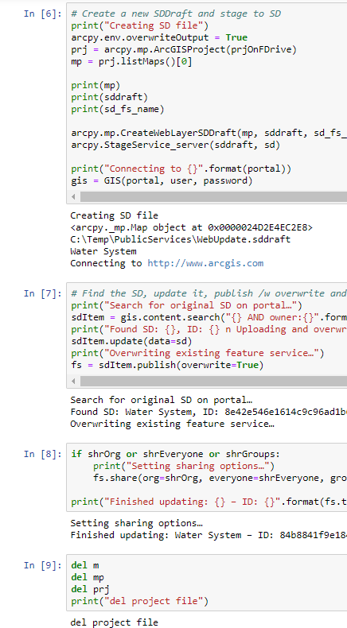
Technical details
City of Lewisville · GIS analyst and intern work
Data conversion, database updates, and map publishing involved repeated manual steps.
- Convert files and tables into spatial data.
- Automate database updates with SQL and Python.
- Build simple interfaces and publishing workflows for recurring tasks.